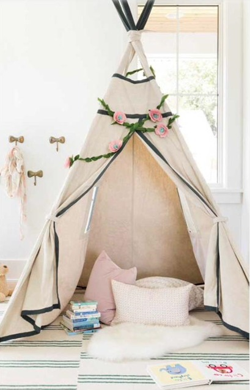

Para a diversão na pandemia, as cabanas em casa são uma ótima opção, já que não podemos sair para participar de acampamentos, nem ir dormir na casa de amigos. Por isso, o Jornal ICJ traz sugestões de cabanas em casa que proporcionam entretenimento desde a construção, até a estadia!
Em casa, onde geralmente não há materiais para a construção de cabanas de acampamento, os lençóis podem ser estendidos em cima de cadeiras ou sofás: quanto maior você quiser sua cabana, mais cadeiras você deve usar, pois elas servem como sustento para a barraca. Se ela for feita no jardim ou quintal, o varal também pode ser usado para tal sustentação.
Para a decoração da tenda, flores e luzes de natal são exemplos de apetrechos encantadores que enfeitam e a deixam mais charmosa. As almofadas e tapetes, são objetos que além de beleza, trazem conforto para a cabana.
Com a cabana já pronta e aconchegante, você já pode passar um tempo nela fazendo suas atividades favoritas: lendo livros divertidos, ou assistindo filmes e séries legais. Ou até mesmo, fazendo uma festa do pijama virtual com seus amigos: cada um pode fazer sua própria cabana e vocês se comunicam por chamadas de vídeo! Que tal? Construa cabanas em casa você também!
